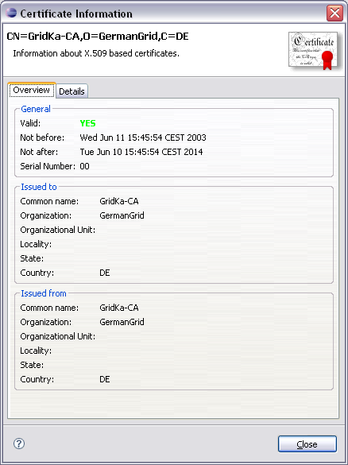
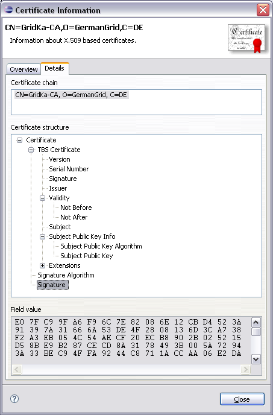

The following screenshot shows the overview tab of the Certificate Info Dialog:

This tab contains some basic information about the certificate (or the first certificate of a certificate chain). It is divided in three sections: some general information about the validity and the serial number of the certificate, a section for the subject of the certificate ("Issued to") and a section for the issuer of the certificate ("Issued from").
The following screenshot shows the details tab of the Certificate Info Dialog:

This tab contains much more information about the certificate than the overview tab. In the upper part one can select the certificate of a certificate chain for which the more detailed information below this part should be shown. The certificate structure tree shows the structure of the selected certificate including the certificate extension as defined for X.509 V3 certificates. By selecting one of the items in the structure tree the corresponding information is shown in the lower part of the dialog.